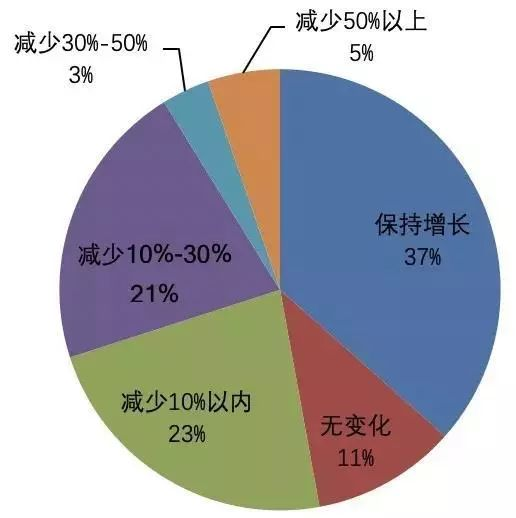
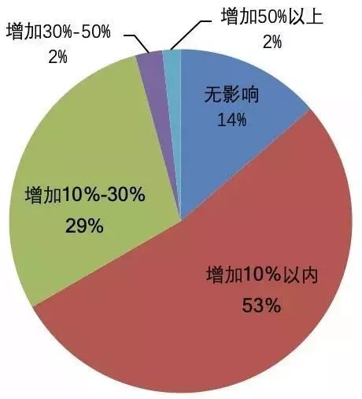

制造企业谋划复工大计，期待3月开始安全自救
原文链接 备份链接 _ 全国除湖北以外地区的确诊病例数增速连日放缓，让部分制造企业看到了希望，基于疫情防控的逐步进展，安全复工自救计划也开始酝酿 _ 文 |《财经》记者 张威 编辑 | 袁满 12个园区、1500家企业、近10万员工，总 …
尽管防疫成本暂时可控，销售收入降低使不少企业依然面临现金流短缺的风险。短期内公司将如何应对？
_
实习生 | 丁宁 记者 | 王晓珊
编辑 | 盛倩玉 沈小山 版式 | 韩佳芸
这个年，石青是在接连不断的电话会议中度过的。
作为一家跨境电商子公司的CEO，石青表示，公司目前已经有产品断货了，如果2月10号还不能复工，预计会有一批新的产品断货。“断货不仅影响销售收入，还对线上产品销量的排名影响非常大”，石青说。
新型冠状病毒感染的肺炎疫情影响下，不少工厂面临停工及交通运输受阻，上下游供应链紧绷，现金流承压，企业家们都咬紧牙关，迎接困难。
北京大学汇丰商学院2月3日的一项在线调查显示，118名受访企业高管中，52.3%认为公司2020年销售收入将较去年减少，86.3%认为公司2020年防疫成本将增加，但仍有近七成企业高管对公司2020年总营收预测趋向乐观。

样本企业2020年主要产品营销收入预测

样本企业防疫成本预测
北大汇丰商学院副院长、副教授欧阳良宜表示，企业家们认为疫情主要影响的是收入端，而非成本端，疫情结束之后的消费报复性反弹能够一定程度上弥补一季度的损失，这一点汶川大地震是个先例。
“但我们调研的企业规模都相对较大，主要为收入在1-10亿的深圳企业，中小微企业的生存状态可能要比我描述的情况差一些。”欧阳良宜说。
“受疫情影响，供应商招工周期变长”
“供应商招不到工人，我们就发动周围的亲戚朋友，看看谁能帮忙找十几、二十个人。”对石青来说，做企业十年来，这么着急地帮助供应商缩减成本、招聘工人，还是头一遭。
“我们的供应商工厂中，70%在珠三角，30%在长三角，这些地方的企业受疫情影响比较严重。”据石青介绍，工厂招聘工人大约需要一个月的周期，就算2月10日开始招聘，最早可能要3月底才能招齐。
截至2月8日，全国新型冠状病毒感染的肺炎患者确诊人数中，除湖北省外，广东省、浙江省确诊人数最多，分别为广东1075人，浙江1048人。

图片来源：丁香医生
“长三角、珠三角都属于疫情管控较为紧张的地区，要求工人立即返岗不是一件容易事。”石青说。
1月26日，国务院办公厅发布关于延长2020年春节假期的通知，要求延长2020年春节假期至2月2日（农历正月初九），因疫情防控不能休假的职工，应根据《中华人民共和国劳动法》规定安排补休，未休假期的工资报酬应按照有关政策保障落实。
1月28日，广东省政府下发通知，要求除涉及保障城乡运行必需（供水、供电、油气、通讯、公共交通、环保、市政环卫等行业）、疫情防控必需（医疗器械、药品、防护用品生产运输和销售等行业）、群众生活必需（超市卖场、食品生产、物流配送等行业）和其他涉及重要国计民生、供港供澳及特殊情况急需复工的相关企业，各类企业复工时间不得早于2月9日24时。
一时间，巨大的现金流压力，令不少企业危机感倍增。
2月6日下午，广东省政府正式印发《关于应对新型冠状病毒感染的肺炎疫情支持企业复工复产的若干政策措施》，提出疫情防控期间准许企业延期申报纳税，职工养老保险可延至疫情解除后三个月内补办补缴，保障企业复工复产，减轻企业经营负担。
**“成本剧增给公司带来不小挑战”
**
由于交通运输受阻和上游供应链企业面临复工压力，部分企业还面临原材料供应不足的风险。
广东省一家当地的鱼丸生产厂商在接受记者采访时表示，由于码头封港，工厂生产严重缺乏海产原料，上游供应商无法正常供货，存在断货风险。“公司现在的现金流快撑不住了。”该厂相关负责人说。
医疗物资生产厂商也同样受到影响。“春节期间人工成本是平时的3-4倍，采购物资成本增加，因此我们拿货价也比平时高太多。” 健客CEO谢方敏在接受记者采访时表示，由于原材料短缺，人工成本增加，短期内供应链上游的成本剧增，给公司带来了不小的挑战。
“在保证价格不会大幅提高的情况下，寻找靠谱的渠道保障供应，是我们当前急需解决的问题。”谢方敏说。
石青所在的公司主要向海外销售计算机、通信、和消费类电子产品，部分单品在亚马逊销售排名位列前三。石青提到，互联网销售不像线下，断货的风险非常大，一但断货会影响整体销售排名，进而影响销售收入。
根据深圳市富业达电子有限公司的官网，电路板产业链大多位于长三角、珠三角地区，受此次疫情影响，行业相关公司在2月份预计面临确定性生产人员返工不及时导致的产能利用率降低风险。
“跨境电商海外物流周期长、现金流紧张，如果疫情在2月底能控制住，我们大概这个月的营销收入会减少20%，对全年不会有太大影响。关键要看这个周期有多长。”石青说。
***新冠肺炎疫情将主要影响企业收入而非成本***
尽管短期内复工延迟带来的人工成本增加，不少企业高管认为，只要未来市场需求回升，全年经营状况不会受太大影响。
根据北大汇丰商学院近期对企业高管的调查研究，在企业高管对此次疫情的预测评估中，销售收入与未来营收预期的相关系数为0.71，防疫成本与未来营收预期相关系数仅为0.35。
在接受采访时，石青计算道，目前，公司为30多名员工准备了口罩3000个，购买价格约为20元/只，加入办公区域消毒等费用，防疫成本大概在10万元左右。对于年收入达到1亿的公司来说，这笔开支目前公司还能够承担。
“2、3月本来就是外海电子产品销售的淡季，只要3月底后产品加工、销售能跟得上，这次疫情对公司全年总收入影响就不会大大。”石青说。
尽管防疫成本暂时可控，销售收入降低使不少企业依然面临现金流短缺的风险。短期内公司将如何应对？北大汇丰商学院的企业调查中，58.12%的企业表示会求助于银行贷款，43.59%的企业将采取股东再出资的办法，26.5%的企业选择外部股权融资，14.53%的企业将依靠民间借贷（此题为多选）。

样本企业应对现金流短缺手段
2月3日和4日，央行超预期开展公开市场操作，两天累计投放流动性1.7万亿元，保持疫情防控特殊时期银行体系流动性的合理充裕，发出加大逆周期调节力度的信号，稳定市场预期。
中银国际证券总裁助理、首席经济学家徐高指出，疫情过后，宏观政策能否更积极地转向稳增长，弥补疫情期经济留下的缺口是关键，如果相应的政策能够落地，那么市场对经济触底回升将会有很强的预期。
（北大汇丰商学院副教授叶韦明、学生罗再宏、张高歌、彭丽颖对此文亦有贡献）
来源｜南都周刊
END
欢迎分享到朋友圈，如想取得授权请邮件：newmedia@nbweekly.com。如果想找到小南，可以在后台回复「小南」试试看哦~

原文链接 备份链接 _ 全国除湖北以外地区的确诊病例数增速连日放缓，让部分制造企业看到了希望，基于疫情防控的逐步进展，安全复工自救计划也开始酝酿 _ 文 |《财经》记者 张威 编辑 | 袁满 12个园区、1500家企业、近10万员工，总 …
原文链接 备份链接 图片来源：视觉中国 记者：肖芳 伍洋宇 周伊雪 编辑：文姝琪 “ 大量的创业公司都面临着现金流的压力，维持6个月以上的现金流被认为是企业能够熬过去的关键。 ” 2020年的春节，疫情突如其来，让创业者们猝不及防。 1 …
原文链接 备份链接 疫情蔓延令本就身处经济逆周期的中小企业雪上加霜，尽管驰援举措已开始出台，但他们企盼更大规模的政策扶持，比如减费降税 图/ IC 文 |《财经》记者 张颖馨 张威 编辑 | 袁满 “坐了一天，小鸟飞过10只，行人8人， …
原文链接 备份链接 我想说，我们再困难也会响应政府号召，去打赢这场新冠肺炎病毒阻击战！ 口述 | 李安定 整理 | 金 姬 我是70后上海人，生于斯长于斯。大学毕业之后的十几年间，我主要从事机电设计顾问方面的工作，在美资、港资和内地几家大 …
原文链接 备份链接 08.02.2020本文字数：1731，阅读时长大约3分钟 导读：“先扛过这一段，再谋未来。” 作者 | 第一财经 刘佳 王海 邱智丽 “我们这里有员工符合七鲜超市的要求，不知道是否可以安排面试？”这是七鲜超市HR小 …